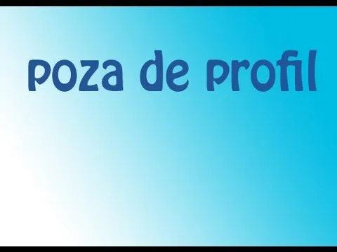

Siguranța nu e un lux. E o decizie.
Sunt Raul Bucioaca, consultant în asigurări. Îți ofer soluții
personalizate pentru protecția ta și a familiei. Analizez, compar și
recomand doar ce este potrivit pentru nevoile tale, nu ce „trebuie
vândut”.
Despre mine
Lucrez în domeniul asigurărilor și al consultanței financiare de mai
mulți ani și am văzut cam toate greșelile pe care le fac oamenii
când aleg o poliță: aleg ce e mai ieftin, nu ce îi protejează cu
adevărat.
Rolul meu este să traduc limbajul de asigurări în română simplă, să
compar pentru tine ofertele de la mai mulți asigurători și să îți
spun foarte clar:
ce acoperă, ce NU acoperă și ce plătești, de fapt, în fiecare
lună.
Nu lucrez pentru o singură companie de asigurări,
lucrez pentru tine, ca să iei decizii corecte, fără
presiune, fără „mici detalii” ascunse și fără promisiuni de
marketing care nu se văd în practică atunci când ai cu adevărat
nevoie de poliță.

Asigurare Auto. RCA și CASCO
Mașina ta nu înseamnă doar un mijloc de transport, ci timp câștigat,
libertate de mișcare și, de multe ori, un instrument de muncă. O
asigurare auto făcută „ca la carte” te protejează atât de greșelile
tale, cât și de greșelile altora.
RCA corect, nu doar cel mai ieftin
Îți propun variante de RCA în funcție de istoricul tău, tipul
mașinii și modul în care circuli. Nu alegem doar „cel mai mic
preț”, ci ținem cont și de limitele de despăgubire, reputația
asigurătorului și modul în care gestionează daunele.
CASCO adaptat mașinii și bugetului
CASCO nu trebuie să fie un moft, ci o plasă de siguranță atunci
când o simplă greșeală sau un eveniment neprevăzut ar însemna mii
de euro din buzunarul tău. Configurăm împreună franșize, riscuri
acoperite și servicii (de exemplu mașină la schimb), astfel încât
să plătești ceva ce are sens pentru tine.
Totul online, fără drumuri inutile
De la ofertă la emiterea poliței, totul se poate face la distanță:
telefon, WhatsApp, e-mail. Primești polița digital, o ai mereu la
îndemână și știi exact pe cine suni când ai nevoie, nu cauți un
call-center anonim.
Dacă vrei să vezi, concret, ce diferență este între un RCA „ieftin” și
un RCA bine ales sau între un CASCO generic și unul adaptat mașinii
tale, scrie-mi sau sună-mă și îți arăt comparațiile pe cazurile tale
reale.
Asigurare Locuință
Pentru cei mai mulți oameni, casa este cel mai valoros bun material. O
asigurare de locuință nu e „o hârtie pentru bancă”, ci diferența
dintre a o lua de la zero după un dezastru și a avea un sprijin
financiar real.
PAD + asigurare facultativă, explicate clar
Îți explic pe românește ce face polița PAD, ce nu face, ce acoperă
o asigurare facultativă și de ce, de fapt, ai nevoie de ambele.
Fără termeni complicați, doar concret: ce se întâmplă dacă „se
întâmplă”.
Protecție reală pentru casă și bunuri
Incendiu, inundație, furt, fenomene meteo, daune la vecini,
stabilim exact ce riscuri vrei să acoperi și la ce sume. Nu umflăm
valorile doar ca să sune bine pe hârtie, dar nici nu le lăsăm atât
de mici încât despăgubirile să nu te ajute în practică.
Fără supraasigurare sau subasigurare
Alegem o sumă asigurată realistă pentru construcție și pentru
bunuri, astfel încât să nu plătești degeaba în plus, dar nici să
nu te trezești că primești prea puțin când chiar ai nevoie. Totul
se bazează pe valori reale, nu pe cifre aruncate din burtă.
Dacă vrei să vezi cum ar arăta, în cifre, o asigurare corectă pentru
casa ta (nu copy-paste dintr-un șablon), trimite-mi câteva detalii și
îți fac o simulare clară.
Asigurare Sănătate
Sănătatea nu ar trebui pusă pe pauză din cauza birocrației sau a
timpilor de așteptare. O asigurare de sănătate bine aleasă îți dă
acces rapid la clinici private, medici buni și investigații la timp.
Acces la clinici private fără liste de așteptare
În funcție de pachet, poți avea consultații, analize, investigații
imagistice și chiar spitalizare în rețele private. Discutăm care
sunt nevoile tale reale și ce tip de pachet se potrivește stilului
tău de viață.
Pachete pentru persoane fizice și angajați
Fie că vrei o asigurare pentru tine și familie, fie că ești
angajator și vrei un beneficiu real pentru echipă, îți arăt
variante de pachete medicale potrivite bugetului disponibil.
Știi de la început ce este și ce nu este inclus
Îți explic clar care sunt limitele, excluderile, perioadele de
așteptare și cum funcționează accesul la servicii. Prefer să știi
din start adevărul complet, nu să descoperi abia când ai nevoie.
Dacă vrei să înțelegi cu adevărat diferența între abonamente medicale,
asigurări de sănătate și pachete mixte, discutăm și îți pun totul în
ordine, cu exemple concrete și comparații clare.
Asigurare de Viață
Asigurarea de viață este una dintre cele mai mature decizii financiare
pe care le poți lua. Nu o faci pentru tine, ci pentru oamenii care ar
avea nevoie de un sprijin financiar dacă venitul tău ar dispărea
brusc.
Protecție pentru familie și venituri
Stabilim împreună o sumă asigurată care să aibă sens: rate,
cheltuieli familiale, educația copiilor. Nu alegem cifre „rotunde”
doar ca să dea bine, ci ceva care chiar ar acoperi un șoc
financiar.
Boli grave, invaliditate, pierderea capacității de muncă
Putem include acoperiri suplimentare pentru situații dificile:
diagnostic de boală gravă, invaliditate sau pierderea capacității
de muncă. Discutăm ce riscuri au sens pentru tine și ce înseamnă
fiecare în bani.
Protecție simplă sau cu componentă de economisire
În funcție de ce îți dorești, putem merge pe polițe pur de
protecție (mai ieftine și foarte eficiente) sau pe variante care
combină asigurarea cu economisire / investiție. Important este să
înțelegi diferențele și să alegi conștient.
Dacă vrei să vezi cum ar arăta un plan de protecție adaptat la venitul
tău și la familia ta, îmi dai câteva repere și îți construiesc
scenarii realiste, nu povești de broșură.
Asigurare Călătorie
O vacanță sau o deplasare în străinătate poate fi stricată rapid de o
problemă medicală, un zbor anulat sau un bagaj pierdut. O poliță de
călătorie bună te ajută să transformi o situație de criză într-un
inconvenient gestionabil.
Acoperire medicală în străinătate
Asigurarea poate acoperi costurile pentru consultații,
investigații, spitalizare și chiar repatriere. Ținem cont de țară,
durata șederii și tipul călătoriei (turism, muncă, studii, sport).
Anulări, întârzieri, bagaje pierdute
Putem include acoperiri pentru anularea călătoriei din motive
întemeiate, întârzieri importante sau pierderea/deteriorarea
bagajelor, astfel încât să nu suporți singur toate costurile.
Polițe potrivite stilului tău de călătorie
City-break, concediu cu familia, muncă sezonieră sau deplasare de
business, discutăm ce faci efectiv acolo și îți recomand polițe
care au sens pentru tipul tău de călătorie, nu o variantă
generică.
Dacă vrei să pleci liniștit, îmi spui unde mergi, pentru cât timp și
în ce scop, iar eu îți trimit 2-3 variante clare, cu prețuri și
acoperiri, ca să alegi cu capul, nu la întâmplare.
Asigurări pentru Firme
O firmă înseamnă mai mult decât clădiri și utilaje: înseamnă oameni,
contracte, responsabilitate față de clienți și parteneri. O asigurare
bine construită îți protejează nu doar activele, ci și reputația și
continuitatea afacerii.
Clădiri, utilaje, stocuri
Analizăm împreună activele importante ale companiei tale și le
asigurăm la valori corecte. Incendiu, inundații, avarii, furt.
Stabilim ce riscuri au sens în funcție de profilul afacerii.
Răspundere civilă și profesională
În funcție de domeniu, poți avea nevoie de răspundere civilă
generală, malpraxis profesional, CMR, răspundere pentru produse
sau servicii. Discutăm concret ce riști în relația cu clienții și
partenerii și ce poți transfera către asigurare.
Asigurări specifice activității tale
Fie că vorbim de construcții, transport, servicii, producție sau
domenii specializate, există soluții dedicate. Scopul nu este să
bifezi „am o poliță”, ci să știi exact ce parte din risc este
acoperită.
Dacă vrei o analiză onestă a riscurilor firmei tale și a asigurărilor
pe care le ai deja, îmi trimiți polițele actuale și câteva detalii
despre activitate, iar eu îți spun clar ce e ok și ce lipsește.
Pensie privată Pilon 3
Dacă vrei să nu depinzi doar de pensia de stat, Pilonul 3 este una
dintre cele mai simple și accesibile forme de economisire pe termen
lung. Contribuțiile sunt flexibile, poți începe cu sume mici, iar
banii tăi se adună în timp.
Plan adaptat bugetului tău
Nu are sens să promitem sume uriașe dacă bugetul nu permite.
Analizăm realist cât poți pune deoparte lunar și construim un plan
pe care chiar îl poți susține, fără să îți sufoci bugetul de zi cu
zi.
Explicat pe românește, fără jargon
Îți explic diferența dintre fonduri, riscuri, orizont de timp și
ce înseamnă volatilitatea, dar în limbaj normal, nu în
„finandeză”. Ideea este să înțelegi unde se duc banii tăi și ce
poți aștepta în timp.
Beneficii fiscale (în limitele legii)
În funcție de legislația în vigoare, contribuțiile la Pilonul 3
pot beneficia de anumite avantaje fiscale. Nu îți promit
„optimizări magice”, dar îți arăt concret ce spune legea și cum se
aplică în cazul tău.
Dacă vrei să vezi concret ce poate însemna Pilonul 3 pentru tine peste
15-20 de ani, scrie-mi sau sună-mă și facem un calcul personalizat,
bazat pe cifre reale, nu pe scenarii rupte de realitate.
Economisire pentru copii, un start mai bun în viață
Mulți părinți spun „vreau să aibă copilul meu mai bine decât am avut
eu”. Asta nu se întâmplă din întâmplare, ci din decizii luate din
timp: puțin, dar constant, pus deoparte.
Planuri dedicate pentru copii
Există produse de economisire și investiții gândite special pentru
copii: pot acoperi educația, un avans de locuință sau un fond de
pornire în viață. Îți explic ce opțiuni ai, cum funcționează și ce
condiții au fiecare.
Sume realiste, nu povești
Nu îți propun să pui deoparte sume cu care nu te vei ține. Începem
de la nivelul la care ești confortabil (de exemplu 100-300 lei pe
lună) și vedem ce poate însemna asta peste 10-18 ani, în scenarii
realiste.
Siguranță + flexibilitate
Discutăm atât variante mai prudente, cât și variante cu potențial
de creștere mai mare, în funcție de cât de mult risc ești dispus
să îți asumi și pe ce perioadă. Important este să înțelegi clar ce
alegi și de ce.
Dacă vrei să vezi, în cifre, ce poate însemna pentru copilul tău să
începi de acum, trimite-mi un mesaj și îți fac un scenariu clar și
sincer, fără promisiuni nerealiste.
Nu e pentru toată lumea. Și e ok.
Poate te gândești că nu e momentul acum: ai alte cheltuieli, rate,
planuri urgente. E normal să fii rezervat când e vorba de bani, mai
ales într-o perioadă în care totul pare mai scump.
Când nu are sens să forțezi
Dacă ești deja sufocat de datorii sau nu știi clar ce intră și ce
iese lunar din buget, prioritatea nu este să mai adaugi încă o
poliță, ci să punem întâi ordine în finanțe. Putem discuta și
despre asta.
Când merită măcar o discuție
Dacă reușești să pui deoparte măcar 200-300 de lei pe lună, deja
putem configura o protecție minimă pentru tine, familie, casă sau
copil, fără să simți că îți „taie respirația” bugetul.
Decizia e la tine, nu la mine
Rolul meu nu este să te presez să cumperi, ci să îți arăt clar ce
riscuri ai acum și ce înseamnă, în bani, să le lași total
descoperite. Prefer o decizie informată „nu acum” decât o poliță
făcută din impuls, pe care să o regreți.
Dacă vrei să discutăm fără obligații, îmi scrii sau mă suni. Discuția
este gratuită, iar concluzia finală îți aparține 100%.
Cum lucrăm, concret
1
Îmi spui ce vrei să protejezi
Persoană, familie, mașină, casă sau afacere. Discutăm 10-15 minute
la telefon sau pe WhatsApp și clarificăm nevoia ta reală, nu doar
„o ofertă de asigurare”.
2
Analizez și compar ofertele
Verific mai mulți asigurători, condițiile, excluderile și
prețurile. Îți trimit 2-3 variante clare, explicate pe înțeles, cu
avantajele și dezavantajele fiecăreia, astfel încât să poți decide
liniștit, fără presiune.
3
Semnăm polița și ai liniște
Alegem împreună varianta potrivită și emitem polița rapid. De aici
încolo,
eu sunt punctul tău de contact pentru întrebări
sau daune, nu call-center-ul. Știi pe cine suni și cine îți
răspunde.
De ce să alegi serviciile mele
Expertiză
Colaborez cu toate companiile mari de asigurări din România,
astfel încât îți pot recomanda varianta potrivită, nu doar „ce
avem pe stoc”. Îți spun și unde am văzut probleme în practică,
nu doar ce scrie frumos în broșuri.
Consultanță gratuită
Comisionul meu este inclus în poliță și este plătit de
asigurător. Tu plătești la fel ca direct la companie, dar
primești în plus timp, explicații și suport atunci când ai
nevoie.
Transparență
Îți spun clar ce acoperă, ce nu acoperă și ce plătești, fără
„clauze mărunte” ascunse în contract. Prefer să clarificăm toate
detaliile acum, nu după ce apare o daună.
Suport personal
Când ai întrebări sau o daună, mă suni direct pe mine, nu stai
la coadă în call-center. Ai un om concret la telefon, care știe
exact ce polițe ai și ce soluții există.
Ideea de bază este simplă: să ai lângă tine un om care îți explică
pe românește ce semnezi și rămâne acolo și după ce ai plătit polița,
nu doar până se încasează prima. Asta înseamnă, pentru mine,
consultanță reală.
Întrebări frecvente
Plătesc ceva în plus dacă lucrez cu tine?
Nu. Comisionul meu este inclus în poliță și este plătit de compania
de asigurări, nu de tine. Tu plătești același preț ca direct la
asigurător, dar primești în plus consultanță și suport.
Pot face asigurarea 100% online?
Da. Discutăm telefonic sau pe WhatsApp, îmi trimiți documentele
necesare, iar polița o primești pe e-mail sau WhatsApp, în format
digital. Dacă este nevoie, putem discuta și față în față.
Ce se întâmplă când am o daună?
Nu te las singur. Mă contactezi direct, iar eu te ghidez în pașii de
constatare și despăgubire, în funcție de companie și tipul de daună.
Îți spun ce acte îți trebuie, unde le depui și la ce să fii atent.